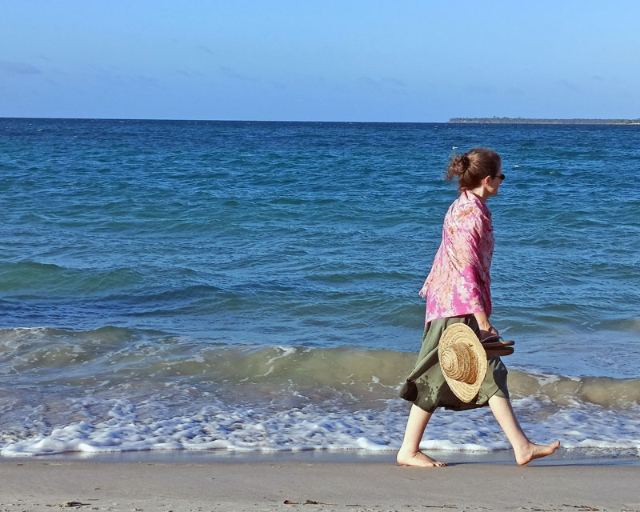
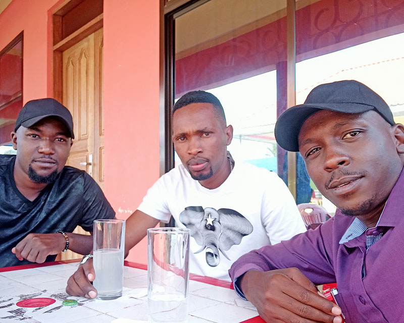

Pambanua tabia za Mahusiano yako: jenga uwezo wa kuzitambua tabia za watu katika mzunguko wako wa maisha.
Mahusiano.
Mahusiano kwa tafsiri ya jumla ni mfumo wa maingiliano ya viumbe hapa ulimwenguni, yanaweza kuwa maingiliano kati ya watu na mazingira, au wanyama na mazingira. Lakini haswa katika kuyazungumzia mahusiano ya tabia za watu, haya ni maingiliano ya wanadamu wenyewe kulingana na tabia zao.
Mifumo inayotengeneza mahusiano.
- Mfumo wa Malezi, Familia/kijamii
- Mfumo wa elimu rasmi, sayansi ya saikolojia.
- Mfumo wa Imani, Mungu au na Dini mbalimbali.
Kwa tafsiri nyepesi zaidi, mahusiano ni taaluma ambayo mwanadamu anapaswa kuipata kaupitia mfumo wa malezi pamoja pamoja na mfumo rasmi wa elimu ya sayansi pamoja na Mfumo wa Imani. Katika maeneo haya matatu, mwanadamu anapaswa kujengewa uwezo wa kuyapambanua mahusiano tofauti tofauti na namna ya kukabiliana na changamoto zinazoweza kuibuka kupitia mahusiano hayo. Katika mfumo rasmi wa elimu, tunawekeza sayansi ya saikolojia, na katika mfumo wa malezi tunawekeza tabia inayokubalika katika jamii, na kwa mfumo wa Imani mtu binafsi anajijenga katika utashi sahihi wa kuingiliana na jamii pamoja na mazingira. Katika makala hii, tutajikita zaidi katika mada ya mahusiano mbalimbali kwa tofauti zake, kisha tutaangazia namna wewe binafsi unavyoweza kuzitambua tabia za watu ambao wako katika mzunguko wa maisha yako, tabia hizo ambazo mara nyingi zinajificha kwenye kimvuli cha uhusiano.
Katika makala yangu moja inayoitwa”Makundi ya tabia za wanadamu.” ambayo ninatumaini umeshaisoma, Ni matumaini yangu ulipata angalau kwa kiasi, namna ambayo unaweza kuyatambua makundi ya tabia za watu, na pia natumaini umeweza kujenga uwezo wa kuchukuliana na baadhi ya makundi hayo. Kwa sababu hiyo, nimeona nikuandikie makala hii, ambayo itakusaidia kuweza kumtambua mtu mmoja mmoja anayekuzunguka katika maisha yako, na kupata namna bora inayoweza kukufanya uwalinde na kuwapa nafasi ya kiwango gani katika mambo yako binafsi.
Nimewahi kuandika namna ambavyo watu wanaweza kukuchukulia wewe binafsi kulingana na mahitaji yao kwako, nilitumia mfano wa Mti unavyoweza kuangaliwa kwa namna tofauti tofauti kulingana na mahitaji ya mtu mwenyewe. Lakini leo katika makala hii, nitakuonesha umuhimu na nafasi za watu katika maisha yako binafsi na yale ya kijamii. Hivyo utakaposoma makala hii, unaweza kupata picha halisi ya tabia za watu wote walioko katika mzunguko wako wa maisha, kama vile ulivyoweza kujua makundi ya tabia za watu katika jamii yetu.
Aina za mahusiano.
- Mahusiano ya udugu: Baba, Mama, Mtoto, Kaka, Dada, Mjomba, Shangazi na binamu.
- Mahusiano ya kimapenzi: Mchumba, Mume na Mke.
- Mahusiano ya kikazi: Mwajiri na mwajiriwa.
- Mahusiano ya kijamii: Urafiki, Ujirani, Ukoo, Kabila, Utaifa na Utu.
- Mahusiano ya kiimani: Mungu na Wanadamu, Dini na Waumini.
Mahusisano haya yote yanategemeana katika nyanja tofauti tofauti, kwa sababu kila aina yauhusiano unaingiliana moja kwa moja na aina nyingine, jambo hilo la maingiliano linawafanya wanadamu kuungana katika masuala mbalimbali yanayohusu maisha yao ya kila siku. Katika maingiliano hayo yanaleta aidha mtafaruku au ustawi katika maisha ya wanadamu. Hivyo katika mahusiano hayo tutaangazia zaidi mahusiano ya Kirafiki, ambayo hayo yanabeba siri nyingi zaidi ukilinganisha na mahusiano mengine. Hayo niliyoyaorodhesha hapo juu, ni baadhi ya yale yanayojulikana na wengi. ambapo katika tofauti zake wengi wetu tumeshindwa kuyatofautisha kabisa.
Mahusiano ya kimapenzi.
Watu wengi wameshindwa kutofautisha kati ya “Uhusiano wa kimapenzi na Hisia za kimapenzi.” Naamini hata wewe uliposoma umepata mshangao au utata, kwa sababu wengi wetu tupo katika kundi moja linalofahamu kwamba ukiwa na hisia za kimapenzi na mtu mwingine, basi mnaweza kuwa na mahusiano mazuri pia, jambo ambalo mara nyingi linakuwa tofauti, kwa sababu ni mara nyingi mahusiano mengi ya kimapenzi yanaharibika japokuwa kila mmoja bado anabaki na hisia kwa mwenzake.
Kama nilivyosema katika mada hii hapo juu, Mahusiano ni TAALUMA, na taaluma hiyo haihusiani kabisa na mfumo wa hisia za mtu binafsi, Taaluma inaweza kutoa maelekezo aidha ya kisheria au ya morali. Hivyo katika mahusiano ya kimapenzi tunaona vitu viwili vinakutana pamoja na havina budi kuishi pamoja, yaani “HISIA NA TAALUMA.” Mambo haya mawili watu wamekuwa wakiyachanganya kwa sababu ya mfumo wa malezi, Katika malezi na makuzi ya binadamu, watu wengi, tumejifunza na kupewa mawaidha ambayo yanatufanya kushindwa kuona tofauti ya Hisia za mapenzi na uhusiano wa mapenzi.
Nimeandika hapo juu, kwamba, watu wanaweza kuwa na hisia za kimapenzi kwa kila mmoja wao, lakini wakashindwa kujenga mahusiano bora ya kimapenzi, hii inatokana na ukweli kwamba, Hisia ni jambo lisilo la hiyari ila uhusiano ni jambo la hiyari. Hisia zinaibuka kutoka ndani ya mtu, ila uhusiano unajengwa kutokana na mambo yanayomzunguka mtu nje. Wapo watu wanaoweza kujenga mahusisano bora ya kimapenzi, lakini mmoja wao akawa hana hisia thabiti na mwenzake au wakati mwingine wakawa wote wawili wana hisia thabiti kwa kila mmoja wao, lakini bado wakashindwa kujenga uhusiano thabiti.
Naamini umewahi kusikia maneno kama, “Nampenda sana fulani, lakini mimi nayeye hatuwezi kuishi pamoja kwa sababu ya mabo kadha wa kadha.” Au wakati mwingine ukasikia maneno kama “Naishi naye tu, lakini sina kabisa hisia naye kimapenzi.” Maneno haya yanadhihirisha Hisia na Mahusiano ni vitu ambavyo watu wanapaswa kuvitenganisha kabisa ili kusudi, iwajengee watu tabia ya kujifunza taaluma ya namna bora ya kuchukuliana na wenza wao, ili tusiendelee kuumiza hisia za watu kwa kigezo cha mahusiano. Na jambo hili sio kwa wapenzi tu bali hata katika mahusiano ya Udugu, kwa sababu wapo ndugu wengi wa damu lakini hawana maelewano kwa sababu ya kutokupata elimu bora ya mahusiano kutoka katika mifumo hiyo mitatu.
Mahusiano ya Kijamii.
Katika mahusiano haya, tutaangazia zaidi katika URAFIKI. Hii ni kutokana na upekee wa uhusiano wa kirafiki katika jamii tuliyoko. Urafiki ni moja kati ya uhusiano imara zaidi na dhaifu zaidi inategemea na weledi walionao watu wenye uhusiano wa aina hii. Urafiki ni uhusiano pekee ambao unaweza kuingia katika makundi yote ya mahusiano, yaani Urafiki haubagui wala kuchagua kundi maalum la kukaa, kwa sababu ya upekee wake huo, basi tutaangazia jinsi gani ya kujenga urafiki bora na kumlinda yule unayemuona kwamba ni rafiki bora kwako.

Baba yako mzazi/mlezi anaweza kuwa rafiki yako, au mama yako au mke au mume au ukoo fulani au kabila fulani au taifa fulani au hata chama fulani. Urafiki ni nguzo katika mahusiano ya jamii yote kwa ujumla. Nguzo hiyo inatokana na upekee wa sifa zake, ambazo ziko tofauti kabisa na aina nyingize za mahusiano.
Sifa pekee za Mahusiano ya Kirafiki.
- Urafiki haubagui kada, imani, umri, jinsia wala wasifu.
- Urafiki ni uhusiano unaotokana na maamuzi binafsi, hautokani na asili ya kibinadamu wala mazingira.
- Urafiki hauna mashindano.
- Urafiki ni daraja la kuunganisha aina zingine zite za mahusiano.

Kwa sifa hizo chache, tunaweza kuona ni namna gani aina hii ya mahusiano inaweza kujenga jamii au kubomoa jamii hiyo hiyo kiurahisi sana. Kwa sababu ya sifa hizo zenye upekee, tuangazie ni tabia gani ambazo zinajificha nyuma ya mahusiano haya ya Urafiki. Na katika kuzichambua tabia hizo, kwa mara nyingine tena nitatumia mfano wa tabia za MTI.
Sifa za Tabia katika Urafiki.
Kwa kutumia mfano ule ule wa Mti, nitakuonesha sifa zilizojificha katika marafiki wanaokuzunguka kwenye maisha yako, sifa hizo ni kiini cha ustawi au mdororo wa maendeleo ya mwili pamoja na akili na Roho yako. Mti ninaouzungumzia wenye matunda na unaozaa kwa wakati na majira maalumu yaliyopangwa. Kama mti unavyozaa kwa wakati na majira maalumu, vivyo hivyo nasi wanadamu tunastawi katika mambo mbalimbali ya kimaisha, ikiwamo Afya ya Mwili na Akili pamoja na Roho zetu.
Mti wowote wenye matunda unagawanyika katika sehemu kuu nne, ambazo ni….
- mizizi,
- shina,
- matawi na
- matunda.

Katika sehemu hizo mti unapata thamani kwa vipindi tofauti tofauti. Vivyo hivyo marafiki tulionao wamegawanyika katika sehemu hizo nne, na pia marafiki zetu wanapata thamani kwa vipindi tofauti tofauti. Ni ukweli kwamba marafiki tulionao hatupati muda wakuwa pamoja nao kwa wakati wote kwenye maisha yetu, badi tunaonana na kushirikiana kwa nyakati tofauti tofauti. Kuonana na kushirikiana kwa nyakati hizo, haipaswi kuondoa wala kuharibu mahusiano yetu, bali inapaswa kutambua kwamba, hizo nyakati hazidumu milele, hivyo basi hata hao marafiki hatuwezi kuwa pamoja nyakati zote. Lakini wengi wetu tumekuwa tukithamini majira fulani na kuyapuuza majira mengine, mfano wengi tumekuwa tukithamini majira ya neema (mavuni) na hatuyathamini yale majira ya kiangazi. Hii ni kwa sababu ya ugumu uliopo wakati wa kiangazi, hivyo tunajikuta hatuangalii thamani ya sehemu muhimu ya mti wakati wa kiangazi.
Sifa ya Mizizi: aina ya marafiki mwenye kufananishwa na mizizi
Hii ni sehemu kuu inayoshikilia Mti kwa uimara kusudi usianguke, sehemu hii inautafutia mti madini pamoja na maji, ili kuukuza kwa afya na kuwa imara kuhimili misukosuko na dhoruba. Nyakati za pepo kali na mafuriko Mizizi inajishika chini ya ardhi kuuwezesha mti kuhimili nyakati hizo ngumu. Pia mizizi inasaidia kuwawezesha wakwezi wa mti kukwea na kuyafikia matunda kwa sababu inaweka uimara wa mti, Ila bahati nzuri na wakati mwingine ni bahati mbaya, Mizizi huwa haionekani kabisa, hivyo thamani yake haitajwi kwa sauti inayotosha.
Vivyo hivyo, marafiki wenye tabia za mizizi wapo katika maisha yetu na wanafanya kazi hiyo kwa nafasi zao, Marafiki hawa kwa bahati mbaya au nzuri huwa hawaonekani na watu wengi kama ni muhimu kwako, kwa sababu huwa hawatendi mambo kwa kuonekana, bali ni watu wanaokushika mkono na kukusimamisha kwa miguu yako ili ujitegemee mwenyewe, na kustawi vyema. Huwa hawatafuti sifa wala heshima kwa msaada wao kwako, bali wanajitahidi kila nyakati ngumu zikikufika, angalau wakusaidie usiharibikiwe na mambo, hujitoa kwa hali na mali kusudi wewe uendelee kuonekana thamani yako.
Marafiki hawa wanapaswa kutunzwa kwa nafasi zao, kwa sababu ukiwaonesha kwa wengine ni rahisi watu wakawaharibu na kukuacha ukiwa dhaifu. Kama ilivyo kwenye mizizi ya mti, ikiwa wazi juu ya ardhi, inapoteza uimara kutokana na pilika pilika za watu na vifaa vingine. Mizizi inaweza ikafananishwa na Familia yako iliyokulea na kukusapoti hadi kufikia hali uliyonayo sasa.
Sifa za shina: aina ya marafiki wenye kufananishwa na shina.
Shina la mti linabebwa na mizizi, linajiimarisha kupitia mizizi, linatengeneza uwiano wa mti, lakini pia linabeba matawi ya mti. Shina linapitisha virutubisho na maji pamoja na madini kutoka kwenye mizizi yanayosaidia mtu kukua na na kuzaa matunda, shina likikatwa basi mti unadumaa. Hivyo marafiki wanaofanana na shina ni wale wanaojishikamanisha pale ambapo mizizi imeishia, yaani baada ya kukua na kuanza maisha ya majukumu ikiwamo kupata elimu hadi kupata kazi. Inaweza ikawa ni waalimu, jamii inayokuzunguka.
Marafiki hawa ni muhimu kwa sababu wanatumika kama daraja la kupitisha mafanikio ya mbele, yaani wanakuandaa na kukujengea uwezo mzuri wa mafanikio ya baadae, japo mara nyingi hawapewi sifa ya yale matunda, ili wao wanathamini zaidi kukuona ukiwa imara na mwenye kuweza kuzaa matunda mengi zaidi. Pia ni marafi wanaoweza kutumiwa na watu kufikia yale matarajio yao waliyonayo kwako, Yaani kuwawezesha watu kunufaika na wewe.
Sifa za matawi: aina ya marafiki wenye kufananishwa na matawi.
Matawi yanafanya kazi ya kubeba maua na matunda ya mti, matawi yanaweza kuwa imara au dhaifu wakati mwingine, hii inatokana na tawi linabeba kiwango gani cha matunda. Matawi yanaupendezesha mti, yanaupa nafuu ya kimvuli kupitia majani na maua yaliyobebwa katika matawi. Kama mti unavyopukutisha majani, na kuyadondosha matunda ili kusudi yafanyike mbolea kwenye mti, ili uweze kuzaa tena wakati mwingine, kwa kufanya hivyo mti unatunza maji pamoja na mbolea katika mizizi.
Hivyo Marafiki wa aina hii ya matawi ni muhimu sana katika maisha yetu, kwa sababu wanatutengenezea nafasi ya kupata thamani kwa watu, wanatusemea vizuri kwa wengine na kutusaidia kuyafikia mafanikio yetu, kazi yao kubwa huwa ni kuhakikisha pindi fursa inapotokea basi tunaipata na inatunufaisha. Zaidi ya yote wanapoona wakati mgumu umeingia basi wanayatumia mafanikio tuliyoyapata wakati wa neema, kutengeneza njia ya mafanikio wakati mwingine, yaani kutuonesha namna na njia bora ya kuwekeza yale mafanikio. Hawa wanaweza kuwa ni mwajiri au mfanyabiashara mwenzako na Mtu yeyote anayetenda mambo yenye kufanana na hizo sifa.
Sifa za matunda: aina ya marafiki wenye kufananishwa na matunda.
Matunda ni sehemu ya mwisho na yenye nguvu katika mti, matunda yanaupa mti jina, yanaufanya utambulike kwa sifa yake, na kuufanya kuheshimika au kudharaulika kulingana na matunda yake. Matunda ni matokeo ya mchakato wote wa kuanzia mizizi adi matawi, hivi vyote vinautengeneza mti au kuandaa mti kuzaa matunda ya aina fulani. Hivyo kama mti uliandaliwa kuzaa matunda yasiyo na hadhi utabainika kupitia matunda yake na endapo uliandaliwa kuzaa matunda pendwa, vivyo hivyo unaheshimika kwa matunda yake.
Vivyo hivyo hata marafiki zetu wenye sifa ya matunda, kazi yao kubwa ni kututambulisha hadhi na nafasi zetu, wanatuheshimisha au kutudharaulisha, mchakato wa malezi na makuzi yetu unaenda kuishia katika aina ya marafiki fulani katika jamii, ambao wanatufanya tuwe na umuhimu fulani katika jamii au kupuunzwa. Watu hawa wanaweza wakawa majirani au wafanyakazi wenzako au mtu yeyote mwenye kukutengenezea jina na sifa ya upekee katika jamii.
Hitimisho.
Makundi yote niliyoyaorodhesha hapo juu ni muhimu katika maisha yetu ya kila siku, kwa sababu yanafanya kazi kwa kutegemeana, kila kundi lina mahali linaanzia na kuna mahala linaishia. Hivyo tujifunze namna ya kuwaweka marafiki tulionao katika makundi wanayostahili, ili kuepuka kumlaumu au kugombana na rafiki yako. Sio kila rafiki anaweza kukufaa katika kila hali, bali kila mmoja anacho cha kukufaa katika hali fulani. Kama mzizi usivyoweza kufanya kazi ya shina basi ha matawi hayawezi kuwa tunda, ila kwa pamoja yanaupa mti uimara na heshima kubwa inayohitajika katika jamii.
Marafiki zetu wote wanaweza kutufaa endapo tutaweza kutambua nyakati wanazohitajika na sehemu anayoweza kufaa, simaanishi ubague marafiki, ila kila rafiki mpe muda wako kwa wakati unaostahili, ili kusudi asijeakakuharibia majira, ukaanza kumlaumu au mkagombana. Rafiki wa aina ya mzizi mpe maji wakati wa kiangazi, rafiki aina ya shina mpe wigo asije akaharibiwa, rafiki aina ya matawi nyunyiza dawa wakati wa kubeba matunda ili asiwe dhaifu akakukosesha matunda na rafiki ambaye ni tunda basi jumuika naye kwa wengine ili wapate ladha ya maisha yako kupitia yeye.